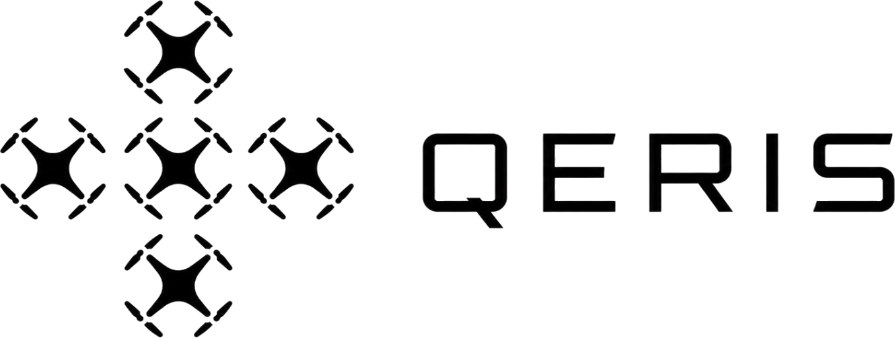

Low cost
Built entirely on cheap, off-the-shelf airframes, sensors, and simple launchpads
Kit delivered under US$ 30k

Prototype
Built entirely on cheap, off-the-shelf airframes, sensors, and simple launchpads
Kit delivered under US$ 30k
Can be ground-emplaced or vehicle mounted
Composed of small and lightweight components
Integrates the full chain, from detection, tracking, and final intercept
Our prototype neutralizes small, evasive, RF-silent drones...
...striking deeper now, up to 100km, far beyond the frontline...
...exposing high-value assets everywhere, both military and civilian